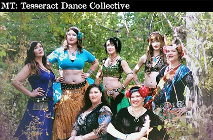
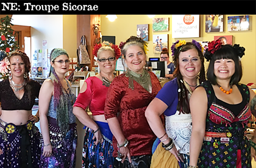
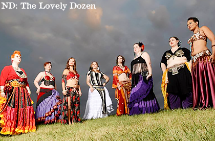
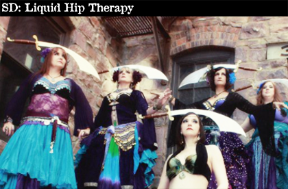
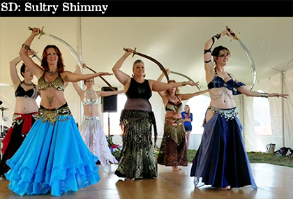
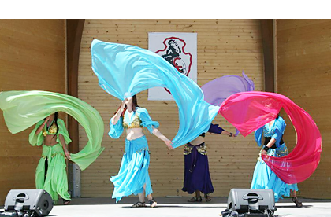

<!DOCTYPE html>
<html>
<head>
<title>Mohr Final Project Fall 2020</title>
<link rel="stylesheet" href="https://unpkg.com/leaflet@1.3.4/dist/leaflet.css" crossorigin=""/>
<script src="https://unpkg.com/leaflet@1.3.4/dist/leaflet.js" crossorigin=""></script>
<!--50 states geojson info-->
<script src="states.js"></script>
<style type="text/css">
	html, body { margin: 0; padding: 0; height: 100%; }
	#map { min-height: 100%; }
	/*popup wrapper styled to fit images -- found class to style by looking at source code rendered once map loads - F12 and arrow*/
	.leaflet-popup-content-wrapper {
		width: 460px;
                background: #000000;
                color: #eeeeee;
                box-sizing: border-box;
	}
	.legend {
              padding: 6px 8px;
              line-height: 18px;
              background: rgba(255,255,255,0.9);
              box-shadow: 0 0 15px rgba(0,0,0,1);
              border-radius: 5px;
          }
 	/* Optional: adjust the values below to change the appearance of the legend color boxes */
	.legend i {
		width: 18px;
		height: 18px;
		float: left;
		margin-right: 8px;
		opacity: .1;
		border: 1px solid #000000;
	}
</style>
</head>

<body>
<div id="map"></div>
      
<script type="text/javascript">
//wrapped script inside a function called when function loads to avoid "bare" variables
const goMap = () => {

//set initial map position & zoom level
var map = L.map('map', {
    center: [47.5,-100],
    zoom: 5
});

//add base map - used terrain layer version from lab 8
var imagery = L.tileLayer('https://stamen-tiles-{s}.a.ssl.fastly.net/terrain/{z}/{x}/{y}{r}.{ext}', {
    attribution: 'Map tiles by <a href="http://stamen.com">Stamen Design</a>, <a href="http://creativecommons.org/licenses/by/3.0">CC BY 3.0</a> &mdash; Map data &copy; <a href="https://www.openstreetmap.org/copyright">OpenStreetMap</a> contributors',
    subdomains: 'abcd',
	minZoom: 0,
	maxZoom: 18,
	ext: 'png'
}).addTo(map);

//sets the five state colors
function getColor(stateIs) {
    return stateIs === 'Nebraska' ? '#ffff00':
    stateIs === 'Montana'  ? '#0000ff':
    stateIs === 'South Dakota'  ? '#ffff00':
    stateIs === 'North Dakota'  ? '#0000ff':
    stateIs === 'Wyoming' ? '#0000ff' :
    'rgba(0,0,0,0)'; //opacity 0 if not one of these five states
}

//apply color to the five states
function style(feature) {
    return {
        fillColor: getColor(feature.properties.NAME), //uses the NAME property of the geojson data in the variable in the geojson.js file to
//identify the five states you want. Calls the getColor function for all 50 states, but only the five you want will return color
        weight: 2, //outline weight of line
        opacity: 0.7, //opacity of line
        color: '#000000', //outline color
        fillOpacity: 0.5 //opacity of filled color from getColor()
    };
}
//add 50 states data to map - var stateInfo is inside geojson.js file
var states = new L.geoJson(stateInfo, {style:style}).addTo(map);

//add markers and popups
//Montana
    var markerMT = new L.marker([46.10450531242844, -108.54301382493858]).addTo(map);
    markerMT.bindPopup('');
//Nebraska
    var markerNE = new L.marker([40.86224172079705, -96.62844638000087]).addTo(map);
    markerNE.bindPopup('');
//North Dakota
    var markerND = new L.marker([47.7253, -97.0329]).addTo(map);
    markerND.bindPopup('');
//South Dakota
    var markerSDa = new L.marker([43.449077489594266, -96.83354374061966]).addTo(map);
    markerSDa.bindPopup('');
    var markerSDb = new L.marker([44.17760927609738, -103.25901548406395]).addTo(map);
    markerSDb.bindPopup('');
//Wyoming
var markerWY = new L.marker([41.456454608267364, -104.72524021795344]).addTo(map);
    markerWY.bindPopup('');

//MAKE THE LEGEND------------------------
let legend = L.control({position: 'bottomleft'});
legend.onAdd = function (map) {
	let div = L.DomUtil.create('div', 'legend');
        div.innerHTML = '<b style="font-size:14px;">Sex Ratio</b><br>Avg. per state<br><br></b>';
	//Makes color boxes for the legend
	div.innerHTML += '<i style="background:#0000ff;"></i>More Males<br><br>';
	div.innerHTML += '<i style="background:#ffff00;"></i>More Females<br><br>';
        return div;
    };
    legend.addTo(map);	

};

goMap();
</script>

</body>
</html>

